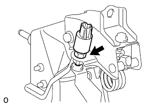
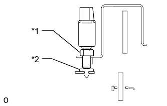

ПЕРЕКЛЮЧАТЕЛЬ МУФТЫ СЦЕПЛЕНИЯ (для моделей с правосторонним рулевым управлением) > УСТАНОВКА |
| 1. УСТАНОВИТЕ ПЕРЕКЛЮЧАТЕЛЬ МУФТЫ СЦЕПЛЕНИЯ В СБОРЕ |
|  |
Временно установите переключатель муфты сцепления в сборе и закрепите его регулировочной гайкой.
|  |
Отрегулируйте переключатель муфты сцепления так, чтобы резьбовая часть легко касалась втулки. Затем затяните регулировочную гайку и проверьте соприкосновение втулки и переключателя.
| *1 | Регулировочная гайка |
| *2 | Амортизатор |
| 2. УСТАНОВИТЕ КРОНШТЕЙН ПЕДАЛИ СЦЕПЛЕНИЯ В СБОРЕ С ГЛАВНЫМ ЦИЛИНДРОМ СЦЕПЛЕНИЯ |
Установите опору педали сцепления в сборе с главным цилиндром сцепления (Нажмите здесь).